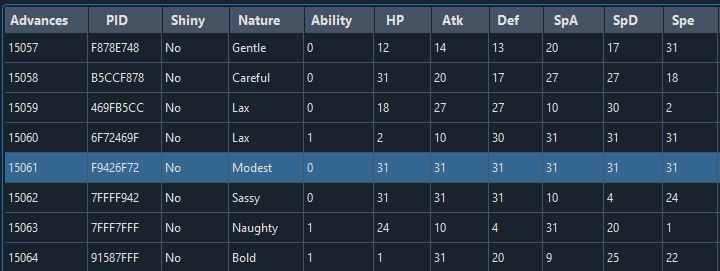
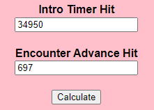

Fire Red and Leaf Green Initial Seed Guide
- Prerequisits
- Preparation
- Hitting Initial Seeds
- Button Offsets
- Notes and Conclusions
Guide Navigation
Text Guide
When performing an RNG manipulation in Fire Red or Leaf Green, you need to understand the concept of initial seeds, as they are needed for every manip. This guide explains the idea behind it and how to hit initial seeds in order to get the desired target for Fire Red and Leaf Green RNG manipulations.
Prerequisites
Tools
- Flowtimer by Stringflow
- Gen 3 Seed Assistant by PapaJefe
- Flowtimer converter by Blisy
In-Game
- Optional: Progress until Celadon City for easier calibration
What are Seeds?
Every Pokemon is generated based on a value from a linear congruential random number generator (LCRNG) with a total of 2 to the power of 32, which are 4,294,967,296 possible spreads. Due to zero-based indexing, Pokefinder will display advances up to 4,294,967,295 before looping back to the 0th advance.
Since Gen 3 games advance the RNG passively at the speed of the video frame rate, advancing about 4.29 billion targets would normally take more than 828 days to reach the furthest possible spreads without any additional multipliers of the advancement rate. Also, if each game starts counting at the same point after booting up every single time, it can lead to getting the same Pokemon on the early advances all the time. These two problems can be fixed by using seeds.
As described above, the game uses LCRNG in order to calculate a sequence of random numbers. Specifically, it does that by using the formula
Next number = ( 0x41C64E6D * Previous number + 0x6073 ) modulo 0x100000000
where numbers with a “0x” prefix indicate that they are hexadecimal numbers. The next number of a sequence always depends on the previously generated number. For the first generated number, there is no previous number, so the generator uses an initial value or seed that acts as the first generated number. In other words, the initial seed decides all subsequently generated numbers.
Since the advances loop back to the first result at the end, the initial seed can also be interpreted as the starting point within the long list of spreads. The following two examples show the advantage of carefully choosing seeds:
Seed A8B9:
Seed BC75:
These two images show the same sequence of spreads with a highlighted 6*31 IV Modest spread. While the seed A8B9 has this sequence at around 6.48 million advances, the seed BC75 needs only about 15000 advances to achieve exactly the same sequence, which means much shorter waiting times. In order to reach that Modest 6 IV target, the seed BC75 is the best suitable because its starting point within the list is the closest one to the target. Since there are many different spreads you could want, ultimately there is no single best seed, but it depends on what target spread you want to get.
Therefore, it is important to know what initial seeds one can be hit in order to reduce waiting times or even remove the need for more complex methods such as Teachy TV.
Generation of Seeds
After knowing what initial seeds are and how they affect the waiting time, it is important to know how they are generated in order to actually hit them. After the Fire Red and Leaf Green intro is finished, the game starts counting the completed clock cycles of the processor.
In addition to the clock cycles, the exact time at which the seeding function is called is affected by several things. These include:
- Game Language
- Game Version
- Pressed, held and released buttons until the intro is finished
- Sound setting
- Button mode setting
They delay the number of clock cycles and therefore the seeds by a few digits. The seeding function converts the exact amount of completed clock cycles into the initial seed as a 16-bit number, which is often displayed as a hexadecimal number.
Game language and version
There are six different languages for Fire Red and Leaf Green games. For seeding, there are three different groups of languages that matter:
- Japanese
- English (UK or US)
- Other "European" languages (French, Spanish, Italian, German)
The Fire Red and Leaf Green version always have different seeds and only for Japanese games, the seeds are different between Fire Red 1.0 and Fire Red 1.1 as well. This leads to these seven different game versions with their own initial seed lists:
Pressed buttons
For the pressed buttons it is important to note that the timing of the button press has to be frame perfect in order to replicate the same button press across several tries. Because this adds another layer of frame perfect inputs, it is recommended to not press any button from booting the game until the intro is finished. This way we get the same seeds more consistently.
Sound and button mode settings
Regarding the sound and button mode settings, you need to go to the in-game options and choose between “MONO” or “STEREO” for the sound setting and “HELP”, “LR” or “L=A” for the button mode, which changes the function of the trigger buttons L and R.
Summary
To sum up, assuming two people play the same version and language of the game (e.g. English Fire Red) and have the same sound and trigger button settings (e.g. MONO and HELP), they will have the same initial seed if they load the game after the same exact amount of time spent on the title screen after watching the intro cutscene without any button presses.
Last, the initial seeds can be differed slightly by a fixed offset by holding one of the buttons Start, Select, D-Pad Up, Down, Right, Left or the B button from starting the game until after the intro. The English Fire Red spreadsheet refers to this as "Additional Held Buttons". Also the seed will be different depending on whether you press A, Start or L (in L=A button mode) on the title screen which is described as "Seed button" in the spreadsheet. These two little tricks are only used when going for a very specific seed and can be ignored for the most part.
Preparation
Spreadsheets
Since it is possible to hit the same initial seeds across different cartridges with the same settings and timing, there are spreadsheets where tools like bots have been used to assign initial seeds to a specified amount of spent time. The lists for each version are linked here:
- Japanese
- Fire Red 1.0 farmed by トノ
- Fire Red 1.1 farmed by トノ
- Leaf Green farmed by トノ
- English
- Fire Red farmed by Blisy
- Leaf Green farmed by po
- Other European versions
- Fire Red farmed by Blisy, converted by Mucks
- Leaf Green farmed by po, converted by Mucks
Each of these documents list the initial seeds with their respective intro times. Each column represents a combination of sound and button mode settings that are specified on the top of each column along with the button presses needed. The seeds are ordered chronologically with the lowest amount of time being at the top and the highest at the bottom of the sheets. This is useful for any calibration when attempting to hit one of the seeds.

This screenshot shows the first 10 initial seeds for the settings Stereo and L=A and pressing A on the title screen. There are no additional held buttons during the intro. The rightmost column shows the seed as a hexadecimal number while the leftmost column displays the seed number for orientation. The two columns in between are the intro times (in milliseconds) needed to reach the specific seeds for GBA and NDS consoles respectively and are 1 video frame (~17 ms) apart on average.
Note: Since the seed is dependent on the number of clock cycles, the seeds between cartridges on a real system and emulators will not be the same. However, Nintendo DS and GameBoy Advance systems produce the same seeds, only with slightly different intro times due to the different frame rate.
Open the spreadsheet that matches your game language and version and choose a target seed that you want to hit. Inside the spreadsheet, next to your target seed there is an intro time for that target seed that you need to copy. The Japanese spreadsheets only list the amount of frames, which you have to multiply with 16.67 for a rough estimation of the intro time.
Setting up the timers
For this tutorial, I will go for the seed 5AAB in the Stereo and L=A column, which is seed #58 and Scyther as my target Pokemon. Since I will perform the RNG on a Nintendo DS console, I copy the intro time of 35369 milliseconds.
Open the Flowtimer converter and select the options based on your game and system. For the method, select Method 1/2/4 for any stationary encounter such as legendary Pokemon or gifts and one of the Sweet Scent options if you are going for Wild RNG. Next, paste the intro time value into the Intro Timer in MS box. You can leave the First Advances and Delay Box as they are and put a low number of advances into the Encounter Advances box for now since we only care about calibrating the intro timer. I chose 700 since it is just enough time to obtain my target Scyther in 700 advances after loading the game. After you have entered everything into the website, it should look similar to this:
Click on the Calculate button and it will give you two numbers: the Flat MS and Flowtimer MS Total value. We only need the Flowtimer MS Total value that should consist of two numbers, separated by a "/" sign. Those numbers are the two timers, after which the beeps will go off. The second and lower number is the intro timer that I copied, which will finish on the title screen. After that moment, the seed will be generated. The first and higher number is the timer for the 700 advances afterwards.
Open Flowtimer and paste your Flowtimer MS Total into the Offset box.
Now that the preparations in-game and with the timers are done, the next step is to perform the RNG manipulation and see what initial seed we get.
Setting up the Gen 3 Seed Assistant
Download and open the Gen 3 Seed Assistant made by PapaJefe. In the top left corner, select your target Pokemon on which you want to perform the RNG. In my case this will be Scyther. Since we did not get the Pokemon yet, we can leave the nature and stats blank for now.
In the bottom left, we put the correct method for our RNG manip. Usually for Fire Red and Leaf Green, legendary and gift Pokemon are Method 1 and wild Pokemon are Method H1. Scyther is a gift Pokemon, so it is Method 1 for me. For the target advances, put the same number of advances that you put as the target frame in the Flowtimer converter. In my case it was 700 and I will put ± 50 advances as the leeway, which is almost 1 second before and after my target advance. Below that, enter any possible seeds that could be hit. Since we haven’t calibrated our timing yet, we will put the 50 seeds below and above our target seed into that window. Since I was going for seed #58, I will paste all seeds from #8 to #108 inside the box. That gives us a large enough margin for missing our target seed and finding out what initial seed we actually hit.
Optionally, we can put the gender ratio from our target Pokemon into the filter section because it can be useful information for some targets. After that, the Gen 3 Seed Assistant is set up and we can proceed and try to hit our target seed.
Hitting Initial Seeds
Before you start, make sure that the in-game settings match the column of your target seed and save in front of your target Pokemon. For calibration, I recommend going for a higher level gift Pokemon such as Eevee in Celadon City, Scyther for 5500 Coins (Fire Red) or Pinsir for 2500 Coins (Leaf Green) in the Celadon Game Corner.
Booting the game and receiving the target
In order to hit the seeds from the document, the console needs to be turned off completely. Soft resets do not result in consistent seeds because the clock cycle counter is not reset during the soft reset. For NDS consoles, you can wait in the DS start menu from which you would boot up the GBA game. Gameboy consoles need to be turned off and started by flicking the Gameboy’s power switch. Freezing the Gameboy advance intro with Start+Select beforehand can lead to inconsistent seeds so it is recommended not to do that. The Gameboy Player for the Nintendo GameCube can also be used: Open the menu with the Z button, select "Change Game Pak" and "Yes". Then press A to start the game without changing the cartridge. For each of these consoles, I will refer to this as starting the game.
Start the game and click "Start" on Flowtimer at the same time. If you need to hold a button during the intro, press and hold it while the Gameboy Advance intro plays.
Do not press any further button from here on. After the intro cutscene finishes you should be at the title screen, where eventually the first timer should count down.
At the last beep of the timer, press and hold the "Seed button" (A, Start or L) until the file select screen appears.
At this point, the seed is set and you can release any buttons and select your save file in order to load the game as fast as possible by skipping the flashback. Interact with your target until you get to the last text box upon receiving the target or be ready to sweet scent when doing wild RNG.
When the second timer goes off, receive your target or initiate the battle. After that, the Pokemon is generated and you can take your time to catch it if needed.
This process must be repeated for any Fire Red and Leaf Green RNG since it is the only way to hit initial seeds consistently.
Calibration
After receiving your target, check its nature and stats in the summary screen.
Type the nature and stats along with the level into the Gen 3 Seed Assistant separated by a space. Press on "Calculate IV Ranges (Send to Filters)" and next on "Search" in the bottom left corner after setting up the seed assistant as described in the previous chapter.
The program should display all spreads that match your Pokemon’s nature and IVs within the window of specified seeds and advances. If there is more than one result, try to enter more information such as the gender or ability of your Pokemon. Also, you can level up your Pokemon with one or more rare candies and put the next level’s stats as additional rows like here:
If there is no result at all or too many results, check the chapter Troubleshooting. Once the program only shows you one result, look at the seed and try to find it in the spreadsheet inside the column that matches your settings. The seed and advances should be somewhat in the vicinity of your target. In my case, I got 697 advances and seed 73EA which is seed #35 and 23 lines above my target seed in the spreadsheet.
Since the seeds are ordered chronologically, this means that I was 23 video frames early with my button press on the title screen. Therefore, I should adjust my timer to be 23 seeds later.
To achieve that, I copy the intro time from the seed I hit and paste it with my advances into the "Intro Timer Hit" and "Encounter Advance Hit" boxes from the Flowtimer converter.
After clicking on calculate, the new timer values appear in the New Flowtimer Total box. My initial timer changes from 48796/35369 to my new adjusted timer of 49265/35788. That implies that next time I will be this amount of time later for the seed generation and hopefully be closer to my target seed.
To check the new calibration, I perform the same RNG with the adjusted timer and see if it improved the accuracy to get to my target seed.

The next Scyther I got was generated on seed 241A with 701 advances, which means I was 3 seeds late because 241A is seed #61.
Therefore, I paste the intro time from seed #61 and 701 advances into the website and get the new timers of 49197/35737.
After a few attempts, the intro time should be calibrated in a way that I hit the seeds around my target seed consistently. Since the game advances the seeds around 60 times per second, it is completely normal and within human error to miss the seed more often than hitting it. Personally, once I hit seeds that are within 2 seeds above or below my target seed, I stop calibrating. Only if I notice that I am consistently early or late, I go for another calibration step to counteract that.
Now, your own personal intro time for your target seed is calibrated and you can start to go for the RNG by adjusting the advances. At this point, you can also reduce the amount of seeds pasted into the bottom left corner of the seed assistant in order to reduce the amount of false positives. Copy and pasting about 10 seeds above and below the target seed should be sufficient.
Troubleshooting
General advice
Before going into more detail, check whether the in-game settings match with the settings from the column of the target seed. Also, make sure that you hard reset the game and follow the instructions regarding button presses as described above. The seeds from the spreadsheets are only reproducible for physical cartridges and are not suitable for emulators, as they most likely have different seeds.
No results are displayed
If the Gen 3 Seed Assistant displays no results after entering your received Pokemon’s stats, the problem might be because of two things. In case the general advice from above did not help and you have pasted 50 seeds above and below your target seed into the bottom left box, it might be that you hit seeds outside of that window. Since a range of 50 seeds is almost a whole seconds of margin before and after the target, this is unlikely to be the problem.
Another reason could be that the received Pokemon is not located within the range of the specified advances. This is likely when going for wild RNG or some specific stationary targets. In this case, try to increase the range of advances in the seed assistant from ± 50 to something higher like 400 advances for wild Pokemon or 600 for some stationary Pokemon such as Lugia, Ho-Oh and Deoxys until you get reasonable results consistently.
Too many results are displayed
When there are too many results, it means that the program is displaying some false positives that have similar IVs and nature to the Pokemon you received. To identify your real target, you could try reducing the number of inserted seeds or the advance window if they are higher than suggested.
For low level targets, such as the starters, the calculated IV ranges may be too large, which means that the number of false positives will naturally increase. Use rare candies whenever possible, or for starters, do the rival battle to level up without getting too many EVs. Then, enter the next level's values below the other values in the seed assistant. Using information like gender, ability, or hidden power can also help to reduce the number of results.
Generally, in these cases, it is a good idea to try several RNGs with the same target and the same timer and write down all the hit seeds that the program suggests. After about 3 different attempts, you should see if there is a group of close seeds that were hit. For example, we perform 3 RNGs and get the following results:
- 1st try (green color): Seeds 1EB5, CE0C, 3042
- 2nd try (blue color): Seeds 84C0, F25
- 3rd try (yellow color): Seeds 13A1, FF9
-

We can see that the three seeds 84C0, CE0C and 13A1 are all close to each other, while the other seeds are further apart. Since we did not change the intro time between these tries, it is more likely to hit seeds that are close to each other. With this method, we can filter out outliers and identify them as false positives, which gives us the true results.
Other
If after many tries you are sure you are hitting a seed that is not in the spreadsheets, or there are other problems with wrong or missing seeds, report the problem as accurately as possible in the Discord server and we will look at it as soon as possible.
Also, for other problems with hitting the initial seeds, ask for advice in the Discord server. We are all happy to help.
Button Offsets to modify the initial seeds
As described above, by holding down any of the buttons Start, Select, D-Pad Up, Down, Right, Left or the B button from before the console is turned on until after the first timer, you can shift the initial seed slightly. Luckily, this shift is consistent depending on the button mode setting and can be used in order to change a seed to another desired one. For the English games the offsets are:
- LR: -1
- LA: -1
- HELP: +7
for French, Spanish, Italian and German games they are:
- LR: -1
- LA: +9
- HELP: +7
This means, for the setting Stereo/LR, the seed D572 will turn into the seed D571 and for the setting Mono/Help, the seed D55A will turn into D561. Remember that seeds are hexadecimal numbers, so after 9 come the numbers A, B, C, D, E, F, 10, 11, …
That is, for the Stereo/LR setting, the D572 seed becomes seed D571, and for the Mono/Help setting, the seed D55A becomes the seed D561. Remember that the seeds are hexadecimal numbers, so after 1-9 the numbers A, B, C, D, E, F, 10, 11, and so on follow.
Notes & Conclusion
This guide explained what initial seeds are and how to hit them in-game. Hitting initial seeds is required for any Fire Red and Leaf Green RNG manipulation, as there is no other way to change the seed after the title screen. Spreadsheets with given timer values take away the part of figuring out the seeds yourself and provide an easy way to calibrate the personal timers. The process of hitting initial seeds adds a layer of a frame-perfect button press which can make the timing tricky but gets easier with more practice.
Credits
Mucks (Author)
Shao, happylappy and Blisy (Reviewing the guide)
Blisy (Researching FRLG Seeds, bot-farming initial seeds, creating a video guide for initial seeds and creator of Flowtimer converter)
Shao (Researching FRLG Seeds)
Papa Jefe (Creator of Gen 3 Seed Assistant)
StringFlow (Creator of Flowtimer)
ZSpica and Mucks (Researching seeds for French, Spanish, Italian and German versions and button offsets)
Thank you for reading, I hope you succeed in hitting your seed. If you have any questions feel free to ask me on Twitter @im_a_blisy or join my discord. https://discord.gg/QchhXQv If you speak another language other than English fluently, and would like to translate this guide, please, contact me and I'd love to help :D